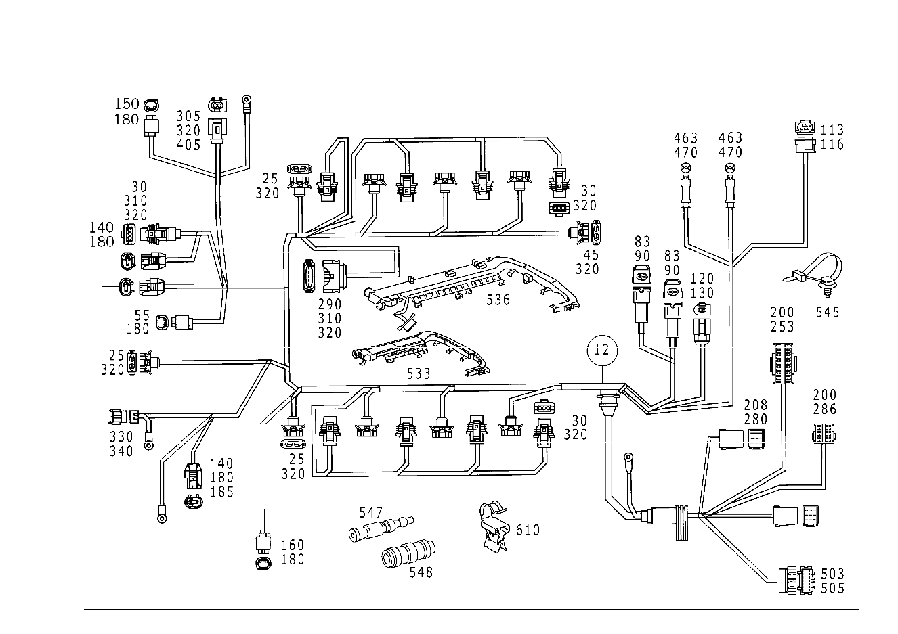

| № | Артикул | Название | Кол. | Примечание | Ограничение |
|---|---|---|---|---|---|
| 12 | A 113 150 19 33 | Электрический провод (ELECTRIC LINE) | 1 | ЖГУТ ПРОВОДКИ ДВИГ. R\-КЛАСС [402] БОЛЬШЕ НЕ ПОСТАВЛЯЕТСЯ | |
| 25 | A 203 545 05 28 | - Штекер (PLUG) | 1 | ВПУСКНОЙ КОЛЛЕКТОР; 2\-PIN SLK2.8 | |
| 25 | A 203 545 05 28 | - Штекер (PLUG) | 8 | ФОРСУНКА; 2\-PIN SLK2.8 | |
| 30 | A 203 545 30 28 | - Штекер (PLUG) | 1 | ДАТЧИК ПОЛОЖЕНИЯ РАСПРЕД.ВАЛА; 3\-PIN SLK2.8 | |
| 30 | A 203 545 30 28 | - Штекер (PLUG) | 8 | КАТУШКА ЗАЖИГ.; 3\-PIN SLK2.8 | |
| 45 | A 203 545 34 28 | - Штекер (PLUG) | 1 | ЭЛЕМЕНТ ВАКУУМНЫЙ; 2\-PIN | |
| 55 | A 210 540 21 81 | - Сцепление, механическое (COUPLING, MECHANICAL) | 1 | ВПУСК. КОЛЛЕКТОР, ДАТЧИК ДАВЛ.; 3\-PIN MQS | |
| 70 | A 000 540 46 15 | - Контактная пружина (SPRING RETAINING PIN) | - | 0.5\-1.0 MM2 JPT | |
| 70 | A 000 540 27 05 | - Электрический провод (ELECTRIC LINE) | NB | РЕМОНТНОЕ РЕШЕНИЕ ДЛЯ КОНТАКТОВ 1.0 MM2; 0.5\-1.00 MM2 JPT [774] СОЕДИНИТЕЛИ ДОЛЖНЫ БЫТЬ ЗАКАЗАНЫ В СООТВЕТСТВИИ С ОБЩИМ СЕЧЕНИЕМ ПРОВОДОВ. РУКОВОДСТВО ПО РЕМОНТУ СМ. WIS КОНЦЕВ. СПАЕЧНЫЕ ГИЛЬЗЫ: A 001 546 99 41 ЗЕЛЁНЫЙ 0,7-2,4 MM2 A 002 546 00 41 КРАСНЫЙ 2,0 - 4,0 MM2 A 002 546 01 41 СИНИЙ 3,5 - 8,0 MM2 A 002 546 11 41 ЖЁЛТЫЙ 7,5 - 12,0 MM2 СОЕДИНИТЕЛИ В СТЫК: A 002 546 13 41 0,5 MM2 A 002 546 14 41 0,8 MM2 A 002 546 15 41 1,3 MM2 A 002 546 16 41 2,0 MM2 | |
| 83 | A 203 545 39 28 | - Штекер (PLUG) | - | 2\-PIN SLK2.8 | |
| 83 | A 203 545 05 28 | - Штекер (PLUG) | 2 | ДАТЧИК ДЕТОНАЦ. СГОРАНИЯ; 2\-PIN SLK2.8 | |
| 113 | A 210 540 36 81 | - Сцепление, механическое (COUPLING, MECHANICAL) | 1 | СЕРВОМЕХАНИЗМ РЕГУЛИРОВКИ Х.Х.; 6\-PIN MQS | |
| 116 | A 013 545 46 26 | - Контактная втулка (CONTACT SOCKET) | - | 0.5\-0.75 MM2 MQS ELA | |
| 116 | A 000 540 26 05 | - Электрический провод (ELECTRIC LINE) | NB | РЕМОНТНОЕ РЕШЕНИЕ ДЛЯ КОНТАКТОВ 0.75mm2; 0.75 MM2 MQS [774] СОЕДИНИТЕЛИ ДОЛЖНЫ БЫТЬ ЗАКАЗАНЫ В СООТВЕТСТВИИ С ОБЩИМ СЕЧЕНИЕМ ПРОВОДОВ. РУКОВОДСТВО ПО РЕМОНТУ СМ. WIS КОНЦЕВ. СПАЕЧНЫЕ ГИЛЬЗЫ: A 001 546 99 41 ЗЕЛЁНЫЙ 0,7-2,4 MM2 A 002 546 00 41 КРАСНЫЙ 2,0 - 4,0 MM2 A 002 546 01 41 СИНИЙ 3,5 - 8,0 MM2 A 002 546 11 41 ЖЁЛТЫЙ 7,5 - 12,0 MM2 СОЕДИНИТЕЛИ В СТЫК: A 002 546 13 41 0,5 MM2 A 002 546 14 41 0,8 MM2 A 002 546 15 41 1,3 MM2 A 002 546 16 41 2,0 MM2 | |
| 130 | A 013 545 15 26 | - Контактная втулка (CONTACT SOCKET) | NB | 0.5\-1.0 mm2; 0.5\-0.75 MM2 SLK2.8 | |
| 140 | A 210 540 20 81 | - Корпус штекерной втулки (RECEPTACLE HOUSING) | 1 | ДАТЧИК ТЕМПЕРАТУРЫ ОХЛАЖДАЮЩЕЙ ЖИДКОСТИ; 2\-PIN MQS | |
| 140 | A 210 540 20 81 | - Корпус штекерной втулки (RECEPTACLE HOUSING) | 1 | СЦЕПЛ. ВАКУУМН. КЛАПАН, ВОЗДУШ. НАСОС; 2\-PIN MQS | |
| 140 | A 210 540 20 81 | - Корпус штекерной втулки (RECEPTACLE HOUSING) | 1 | КОМПРЕСС. КОНДИЦИОНЕРА; 2\-PIN MQS | |
| 150 | A 210 540 21 81 | - Сцепление, механическое (COUPLING, MECHANICAL) | 1 | ДАТЧИК МАСЛА; 3\-PIN MQS | |
| 180 | A 008 545 63 26 | - Контактная втулка (CONTACT SOCKET) | - | 0.5\-0.75 MM2 MQS ELA | |
| 180 | A 000 540 25 05 | - Электрический провод (ELECTRIC LINE) | NB | РЕМОНТНОЕ РЕШЕНИЕ ДЛЯ КОНТАКТОВ 0.5 MM2; 0.5 MM2 MQS [774] СОЕДИНИТЕЛИ ДОЛЖНЫ БЫТЬ ЗАКАЗАНЫ В СООТВЕТСТВИИ С ОБЩИМ СЕЧЕНИЕМ ПРОВОДОВ. РУКОВОДСТВО ПО РЕМОНТУ СМ. WIS КОНЦЕВ. СПАЕЧНЫЕ ГИЛЬЗЫ: A 001 546 99 41 ЗЕЛЁНЫЙ 0,7-2,4 MM2 A 002 546 00 41 КРАСНЫЙ 2,0 - 4,0 MM2 A 002 546 01 41 СИНИЙ 3,5 - 8,0 MM2 A 002 546 11 41 ЖЁЛТЫЙ 7,5 - 12,0 MM2 СОЕДИНИТЕЛИ В СТЫК: A 002 546 13 41 0,5 MM2 A 002 546 14 41 0,8 MM2 A 002 546 15 41 1,3 MM2 A 002 546 16 41 2,0 MM2 | |
| 200 | A 008 545 55 26 | - Контактная втулка (CONTACT SOCKET) | - | 0.5\-0.75 MM2 MQS | |
| 200 | A 000 540 46 05 | - Электрический провод (ELECTRIC LINE) | NB | РЕМОНТНОЕ РЕШЕНИЕ ДЛЯ КОНТАКТОВ 0.75mm2; 0.75 MM2 MQS SN [774] СОЕДИНИТЕЛИ ДОЛЖНЫ БЫТЬ ЗАКАЗАНЫ В СООТВЕТСТВИИ С ОБЩИМ СЕЧЕНИЕМ ПРОВОДОВ. РУКОВОДСТВО ПО РЕМОНТУ СМ. WIS КОНЦЕВ. СПАЕЧНЫЕ ГИЛЬЗЫ: A 001 546 99 41 ЗЕЛЁНЫЙ 0,7-2,4 MM2 A 002 546 00 41 КРАСНЫЙ 2,0 - 4,0 MM2 A 002 546 01 41 СИНИЙ 3,5 - 8,0 MM2 A 002 546 11 41 ЖЁЛТЫЙ 7,5 - 12,0 MM2 СОЕДИНИТЕЛИ В СТЫК: A 002 546 13 41 0,5 MM2 A 002 546 14 41 0,8 MM2 A 002 546 15 41 1,3 MM2 A 002 546 16 41 2,0 MM2 | |
| 290 | A 220 545 46 28 | - Штекер (PLUG) | 1 | РАСХОДОМЕР ВОЗДУХА; 5\-PIN SLK2.8 | |
| 310 | A 000 545 25 46 | - Защитный колпачок (PROTECTIVE CAP) | 1 | TO 220 545 46 28 | |
| 310 | A 000 545 25 84 | - Защитный колпачок (COVER CAP) | 1 | TO 203 545 30 28 | |
| 320 | A 009 545 81 26 | - Контактная втулка (CONTACT SOCKET) | - | 0.5\-0.75 MM2 SLK2.8 | |
| 320 | A 000 540 38 05 | - Электрический провод (ELECTRIC LINE) | NB | РЕМОНТНОЕ РЕШЕНИЕ ДЛЯ КОНТАКТОВ 0.75mm2; 0.75 MM2 SLK2.8 [774] СОЕДИНИТЕЛИ ДОЛЖНЫ БЫТЬ ЗАКАЗАНЫ В СООТВЕТСТВИИ С ОБЩИМ СЕЧЕНИЕМ ПРОВОДОВ. РУКОВОДСТВО ПО РЕМОНТУ СМ. WIS КОНЦЕВ. СПАЕЧНЫЕ ГИЛЬЗЫ: A 001 546 99 41 ЗЕЛЁНЫЙ 0,7-2,4 MM2 A 002 546 00 41 КРАСНЫЙ 2,0 - 4,0 MM2 A 002 546 01 41 СИНИЙ 3,5 - 8,0 MM2 A 002 546 11 41 ЖЁЛТЫЙ 7,5 - 12,0 MM2 СОЕДИНИТЕЛИ В СТЫК: A 002 546 13 41 0,5 MM2 A 002 546 14 41 0,8 MM2 A 002 546 15 41 1,3 MM2 A 002 546 16 41 2,0 MM2 | |
| 330 | A 011 545 71 28 | - Корпус штекерной втулки (RECEPTACLE HOUSING) | 1 | ПРОДУВКА КАТАЛИЗАТОРА; 2\-PIN | |
| 340 | A 003 545 26 26 | - Контактная втулка (CONTACT SOCKET) | NB | 4 MM2; 0.35\-4.0 MM2 RK4 | |
| 463 | A 001 540 24 81 | - Штекер (PLUG) | 2 | КИСЛОРОДНЫЙ ДАТЧИК | |
| 463 | A 001 540 28 81 | - Сцепление, механическое (COUPLING, MECHANICAL) | 2 | КИСЛОРОДНЫЙ ДАТЧИК; 6\-PIN MQS | |
| 470 | A 032 545 54 28 | - Контактный стержень (CONTACT PIN) | - | 0.5\-1.0 mm2 | |
| 470 | A 000 540 42 05 | - Электрический провод (ELECTRIC LINE) | NB | РЕМОНТНОЕ РЕШЕНИЕ ДЛЯ КОНТАКТОВ 1.0 MM2; 1.0 MM2 LKS 1.5 [774] СОЕДИНИТЕЛИ ДОЛЖНЫ БЫТЬ ЗАКАЗАНЫ В СООТВЕТСТВИИ С ОБЩИМ СЕЧЕНИЕМ ПРОВОДОВ. РУКОВОДСТВО ПО РЕМОНТУ СМ. WIS КОНЦЕВ. СПАЕЧНЫЕ ГИЛЬЗЫ: A 001 546 99 41 ЗЕЛЁНЫЙ 0,7-2,4 MM2 A 002 546 00 41 КРАСНЫЙ 2,0 - 4,0 MM2 A 002 546 01 41 СИНИЙ 3,5 - 8,0 MM2 A 002 546 11 41 ЖЁЛТЫЙ 7,5 - 12,0 MM2 СОЕДИНИТЕЛИ В СТЫК: A 002 546 13 41 0,5 MM2 A 002 546 14 41 0,8 MM2 A 002 546 15 41 1,3 MM2 A 002 546 16 41 2,0 MM2 | |
| 503 | A 220 545 92 28 | - Штекер (PLUG) | 1 | РАЗЪЕМ, МЕСТО РАЗЪЕДИН. МОТОР. ОТСЕКА; 14 PIN SLK2.8 | |
| 505 | A 035 545 73 28 | - Плоский штекер | NB | 0.5 \- 1.0mm2; 0.5\-0.75 MM2 SLK2.8 | |
| 505 | A 046 545 40 28 | - Штекер (PLUG) | NB | 0.5 \- 1.0mm2; 0.5\-0.75 MM2 SLK2.8 | |
| 505 | A 035 545 74 28 | - Плоский штекер (MALE SPADE CONNECTOR) | NB | 1.0 \- 2.5 MM2; 1.5\-2.5 MM2 SLK2.8 | |
| 547 | A 001 546 99 41 | Соединитель проводов (LINE CONNECTOR) | NB | ЗЕЛЕНЫЙ 0.7\-2.4 MM2; 0.7 \- 2.4 MM2 | |
| 547 | A 002 546 00 41 | Соединитель проводов (LINE CONNECTOR) | NB | КРАСНЫЙ 2.0\-4.0 MM2; 2.0 \- 4.0 MM2 | |
| 547 | A 002 546 01 41 | Соединитель проводов (LINE CONNECTOR) | NB | СИНИЙ 3.5\-8.0 MM2; 3.5 \- 8.0 MM2 | |
| 547 | A 002 546 11 41 | Соединитель проводов (LINE CONNECTOR) | NB | ЖЕЛТЫЙ 7.5\-12.0 MM2; 7.5 \- 12.0 MM2 | |
| 548 | A 002 546 13 41 | Соединитель проводов (LINE CONNECTOR) | NB | 0.5 MM2; 0.5 MM2 | |
| 548 | A 002 546 14 41 | Соединитель проводов (LINE CONNECTOR) | NB | 0.8 MM2; 0.8 MM2 | |
| 548 | A 002 546 15 41 | Соединитель проводов (LINE CONNECTOR) | NB | 1.3 MM2; 1.3 MM2 | |
| 548 | A 002 546 16 41 | Соединитель проводов (LINE CONNECTOR) | NB | 2.0 MM2; 2.0 MM2 | |
| 570 | A 112 203 01 40 | Держатель (HOLDER) | 1 | ||
| 580 | A 001 995 85 01 | хомут (CLAMP) | 1 | ПЛАНКА КАБЕЛЯ | |
| 590 | N 007976 004302 | Шуруп | 1 | ||
| 600 | A 001 997 83 90 | Кабельная стяжка | NB | 4.6X279 MM | |
| 610 | A 000 995 44 14 | Держатель (HOLDER) | NB | К КРЫШКЕ ГАЗОРАСПРЕД.МЕХАНИЗМА | |
| A 112 150 07 33 | - Электрический провод (ELECTRIC LINE) | 1 | ДАТЧИК ПОЛОЖЕНИЯ КОЛЕН.ВАЛА | ||
| A 050 545 30 28 | - Корпус штекера (PLUG HOUSING) | 1 | "ISM"; 5\-PIN MLK1.2,SLK2.8 | ||
| A 019 545 18 26 | - Контактная втулка (CONTACT SOCKET) | NB | TO A 050 545 30 28; 0.22\-0.5 MM2 MLK1.2 | ||
| A 000 540 39 05 | - Электрический провод (ELECTRICAL LINE) | NB | РЕМОНТНОЕ РЕШЕНИЕ ДЛЯ КОНТАКТОВ TO A 050 545 30 28; 1.5 MM2 SLK2.8 [774] СОЕДИНИТЕЛИ ДОЛЖНЫ БЫТЬ ЗАКАЗАНЫ В СООТВЕТСТВИИ С ОБЩИМ СЕЧЕНИЕМ ПРОВОДОВ. РУКОВОДСТВО ПО РЕМОНТУ СМ. WIS КОНЦЕВ. СПАЕЧНЫЕ ГИЛЬЗЫ: A 001 546 99 41 ЗЕЛЁНЫЙ 0,7-2,4 MM2 A 002 546 00 41 КРАСНЫЙ 2,0 - 4,0 MM2 A 002 546 01 41 СИНИЙ 3,5 - 8,0 MM2 A 002 546 11 41 ЖЁЛТЫЙ 7,5 - 12,0 MM2 СОЕДИНИТЕЛИ В СТЫК: A 002 546 13 41 0,5 MM2 A 002 546 14 41 0,8 MM2 A 002 546 15 41 1,3 MM2 A 002 546 16 41 2,0 MM2 | ||
| A 045 545 33 28 | - Корпус штекера (PLUG HOUSING) | 1 | БЛОК УПРАВЛ.ДВИГАТ.; 6\-PIN LKS1.5 | ||
| A 000 545 63 26 | - РОЗЕТКА | NB | 0.75mm2 | ||
| A 168 545 30 28 | - Корпус штекерной втулки (RECEPTACLE HOUSING) | 1 | ГЕНЕРАТОР; 2\-PIN COD.B;SLK2.8 | ||
| A 208 545 23 28 | - Сцепление, механическое (COUPLING, MECHANICAL) | 1 | ШТЕКЕРНОЕ СОЕДИНЕНИЕ КП; 9 PIN SLK 2.8 |
Позиций: 59 · подписано на схемах: 51 · колесо — плавный зум в курсор, перетаскивание — пан, двойной клик — зум, клик по артикулу — скопировать.